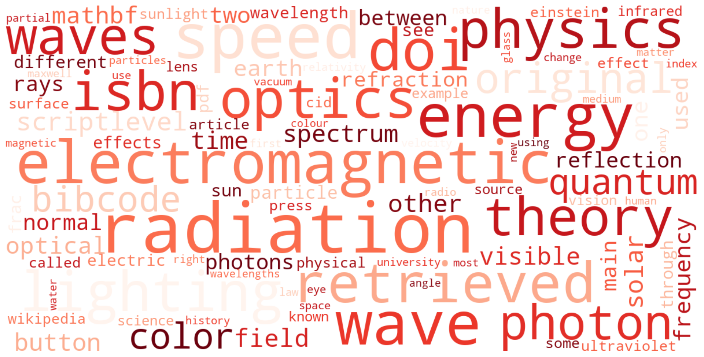

English corpus — 10 Wikipedia pages
Overview of collected pages: HTTP status, encoding, word count and occurrences of the target word per page.
Most frequent words in the English corpus, stopwords and target word light excluded.

Every occurrence of light in the corpus, with 5 context tokens on each side. KWiC (KeyWord In Context) format.
Words appearing most frequently within ±5 tokens of light.
Top 30 consecutive word pairs in the English corpus, stopwords excluded.